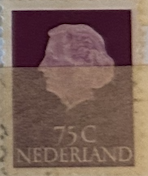
| SOURCE | TITLE| IMAGE MATCH | click to source page |
| eBay | Brown Royalty Elizabeth II (1952-2022) Era Canadian Stamps for sale | eBay |  |
| eBay | Netherlands Postage ~ Queen Juliana ~ Brown 10₵ Stamp ~Used/Posted ~1953 ~ B06 | eBay |  |
| eBay | Brown Royalty Used Canadian Stamps for sale | eBay | 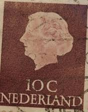 |
| eBay | Royalty Elizabeth II (1952-2022) Era Used Canadian Stamps for sale | eBay |  |
| eBay | Netherlands Postage ~ Queen Juliana ~ Brown 10₵ Stamp ~Cancelled/Posted ~1953-07 | eBay | 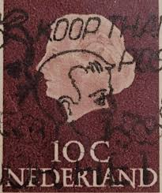 |
| eBay | Brown Royalty Elizabeth II (1952-2022) Era Canadian Stamps for sale | eBay |  |
| eBay | Netherlands Postage ~ Queen Juliana ~ Brown 10₵ Stamp ~Used/Posted ~1953 ~ D01 | eBay |  |
| eBay | Netherlands Postage ~ Queen Juliana ~ Brown 10₵ Stamp ~Cancelled/Posted ~1953-07 | eBay | 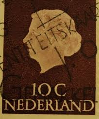 |
| I see I still miss a lot stamps. One day I will try and go for the missing ones. | 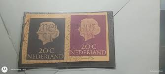 | |
| eBay | 1974 Netherlands SC# 521 - Centenary of Universal Postal Union - Used | eBay | 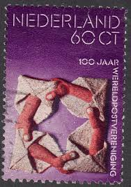 |
| eBay | Netherlands Postage ~ Queen Juliana ~ Brown 10₵ Stamp ~Cancelled/Posted ~1953-12 | eBay | 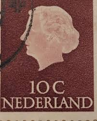 |
| ahtaunus.de | Angebote aus privater Hand - Angebote aus privater Hand | 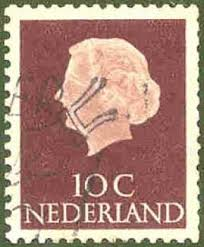 |
| Bob Shop | Netherlands & Colonies - NETHERLANDS 1974 The Universal Postal Union ULH CV R7.70 SG 1199 was listed for 0.00 on 16 Jul at 12:16 by trevorfrsr in Durban (ID:646881187) | 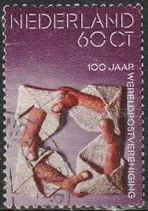 |
| eBay.de | Niederlande - 100 Jahre Weltpostverein postfrisch 1974 Mi. 1038 | eBay.de | 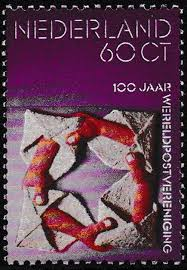 |
| Briefmarken-Versand-Welt | UPU Weltpostverein Briefmarken und Belege – Motive der Weltpostgeschi | 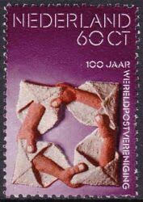 |
| eBay | NETHERLANDS STAMPS 1974 UPU MNH - NED85 | eBay | 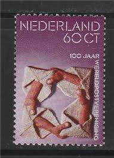 |
| eBay | Netherlands 521 two stamps, MNH. Michel 1038. UPU-100,1974. | eBay | 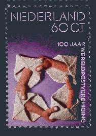 |
| eBay UK | Netherlands 1974 UPU/Universal Postal Union/Communication/Design 1v (n40986) | eBay UK | 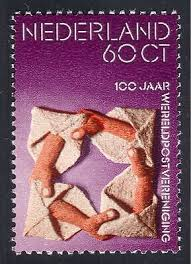 |
| Etsy | Stamp Art, Brown, Regina Queen Juliana, 10 Cents, Netherlands, Used Stamps - Etsy | 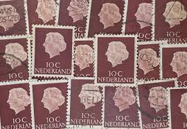 |
| eBay | Lot of 99 Used Stamp 10 cent Nederland 1957 brown | eBay | 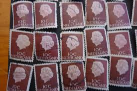 |
| eBay | Dutch New Guinean Stamps for sale | eBay | 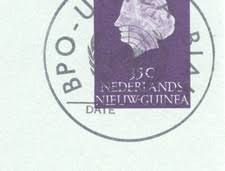 |
| eBay | Netherlands Scott 346e Unused. | eBay | 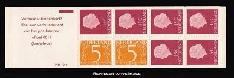 |
| eBay | Las mejores ofertas en Brown Isabel II (1952-2022) era estampillas de Canadá | eBay | 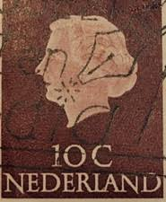 |
| Dreamstime.com | 116 Upu Serie Stock Photos - Free & Royalty-Free Stock Photos from Dreamstime | 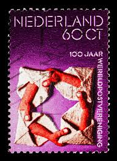 |
| eBay | Netherlands Postage ~ Queen Juliana ~ Brown 10₵ Stamp ~ Posted ~1953 ~ B182 | eBay | 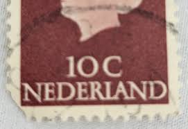 |
| definitives.org | Issue Queen Juliana 1953 Netherlands Stamps catalogue - standard mail | Definitives.org - An ordinary world | 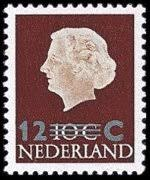 |
| PicClick UK | NETHERLANDS STAMPS - Numeral 2 Dutch cent 1946 Sg:NL 637 £1.16 - PicClick UK | 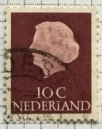 |
| eBay | Netherlands Postage ~ Queen Juliana ~ Brown 10₵ Stamp ~Used/Posted ~1953 ~ B07 | eBay | 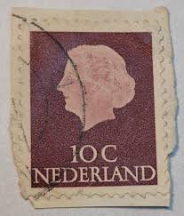 |
| Filatelieloket.nl | Nederland NL 1057 1974 Raad van Europa Postfris 45 | 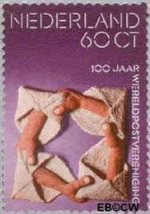 |
| JouwWeb | Een bijzondere postgeschiedenis Deel 1 / Kunst en grafische uitingen | Een Postgeschiedenis | 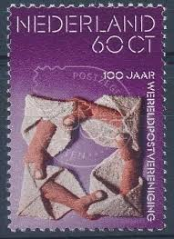 |
| Lazada Philippines | Netherlands Flag Magnet - Creative Souvenirs Decoration For Refrigerator & Car Window Stickers | Lazada Philippines | 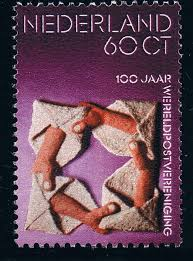 |
| Todocolección | holanda sello vrede van muster año 1948 - Buy Antique stamps of Netherlands on todocoleccion | 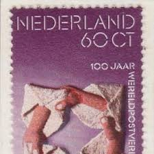 |
| Stampex India | NETHERLANDS 1975-Cultural Health and Social Welfare-National Monument year, Preserved Monuments, Set of 4, MNH, S.G. 1209-1212-Cat £ 6 - Indian Stamp Co. | Stampex India | 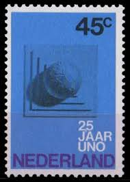 |
| eBay | Brown Elizabeth II (1952-2022) Era Canadian Stamps for sale | eBay | 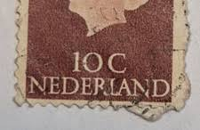 |
| bol.com | Briefkaart met afbeelding koningin Juliana postzegel | bol |  |
| Colnect | Stamp: Queen Juliana (1909-2004) - Phosphorescent Paper (Netherlands(Queen Juliana - 1967-1971 - Type 'En Profile' phosphorescent) Mi:NL 629XyA,Yt:NL 609a,AFA:NL 631F,NVP:NL 633b,Un:NL 609F 📮 | 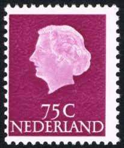 |
| Colnect | Netherlands : Stamps [Year: 1965] [1/4] : Colnect 📮 | 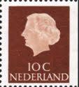 |
| eBay | 1974 NETHERLANDS NEDERLAND UPU CENTENARY VF MNH | eBay | 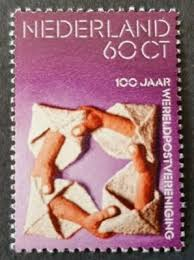 |
| Dreamstime.com | 247 Juliana Circa Stock Photos - Free & Royalty-Free Stock Photos from Dreamstime | 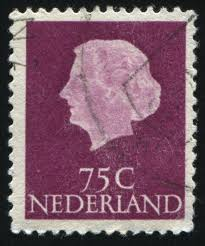 |
| allnumis.com | 45 Cent 1970 - 25th Anniversary of U.N.O., Anniversary - Netherlands - Stamp - 10323 | 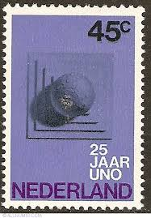 |
| allnumis.com | 65 Cents 1986 - Figure, Numerals, Figures - Netherlands - Stamp - 7910 | 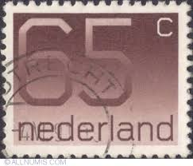 |
| Dreamstime.com | Postage Stamp Printed in Netherlands Shows Relief of the Roman Goddess Juno Moneta, Royal Numismatics Society Serie, Circa 1992 Editorial Photo - Image of correspondence, moscow: 163463601 | 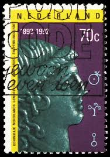 |
| stampsandstuff.net | Stamps from Netherlands | 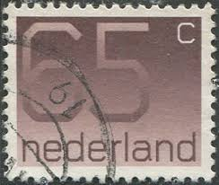 |
| vividagallery.com | Netherlands Queen Juliana Deep Red Profile Silhouette Definitive Series Monarchy Tote Bag by Vivida Gallery - Vivida Gallery | 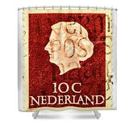 |
| HipStamp | Netherlands #548 25c Numeral | Europe - Netherlands & Colonies, General Issue Stamp / HipStamp | 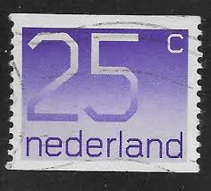 |
| HipStamp | Netherlands #359 80c Queen Juliana | Europe - Netherlands & Colonies, General Issue Stamp / HipStamp | 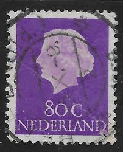 |
| Amazon.ca | Netherlands 1415C-1416C (Complete.Issue.) unmounted Mint/Never hinged ** MNH 1991 Numbers (Stamps for Collectors) : Amazon.ca: Everything Else | 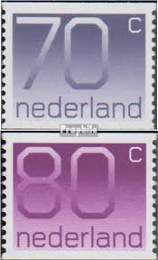 |
| eBay | Netherlands Postage ~ Queen Juliana ~ Brown 10₵ Stamp ~Used/Posted ~1953 ~ D04 | eBay | 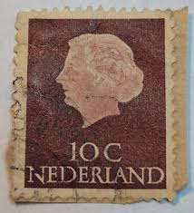 |
| HipStamp | Netherlands #344 10 Queen Juliana ~ Used | Europe - Netherlands & Colonies, General Issue Stamp / HipStamp | 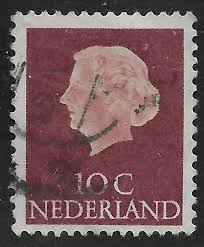 |
| allnumis.com | 25 + 10 Cent 1967 - Jellyfish, Fishes and other aquatic life - Netherlands - Stamp - 10230 | 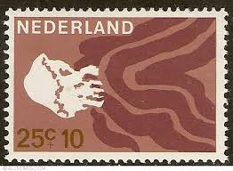 |
| eBay | Netherlands 1953 40c Queen Juliana Stamp | eBay | 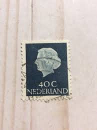 |
| eBay | Niederlande 1986 ** Mi.1297 C Freimarke Definitive Ziffern [st3038] | eBay | 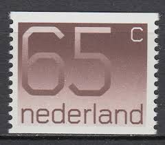 |
| LOT-ART | Netherlands 1969 - Queen Juliana, stamp booklet with a cutting error in the image, type C - NVPH PB 6a, met telblok in Netherlands | 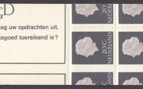 |
| HipStamp | Netherlands Sc#347 MNH, 20c vio blk, Queen Juliana - 1953-1967 - Type 'En Pro... | Europe - Netherlands & Colonies, General Issue Stamp / HipStamp | 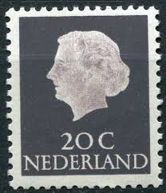 |
| the-low-countries.com | d = f (a-s) | 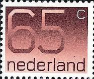 |
| Shutterstock | 11+ Thousand Stamp Netherlands Royalty-Free Images, Stock Photos & Pictures | Shutterstock | |
| HipStamp | Netherlands 344: 10c Queen Juliana, used, F-VF | Europe - Netherlands & Colonies, General Issue Stamp / HipStamp | |
| Shutterstock | Stamp Queen: Over 11,268 Royalty-Free Licensable Stock Photos | Shutterstock | |
| Shutterstock | 1+ Thousand Queen Juliana Royalty-Free Images, Stock Photos & Pictures | Shutterstock | |
| allnumis.com | 55 Cent 1996, Misc - Netherlands - Stamp - 23607 |